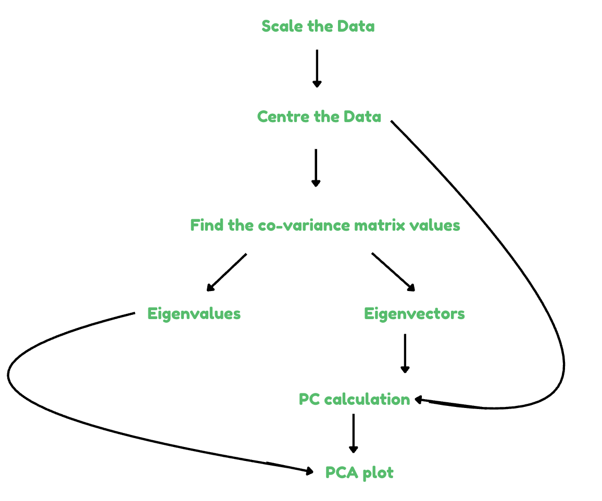
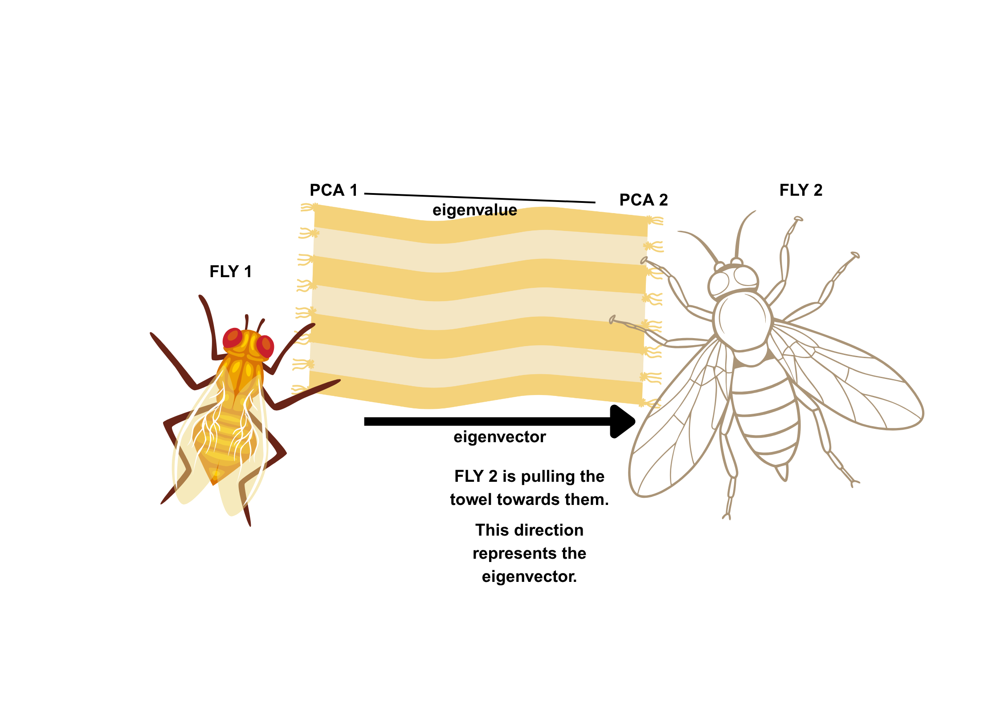

A background to PCA
What is PCA?
Principal Component Analysis (PCA) is a visualisation method that simplifies complex data by reducing it to just a few key dimensions. It helps you visualise patterns: points that appear close together on the plot are more similar, while those farther apart are more different. PCA works best when the data exhibits linear relationships, as it captures variation along straight-line directions in the data.
This similarity is often based on Euclidean distance, which measures the straight-line distance between data points in the reduced space. PCA ensures that this reduced space still captures the most important variation in the data, so Euclidean distances between points remain meaningful.
Breaking it down into a few key points…
PCA reduces the dimensionality of datasets with a lot of different variables and transforms highly correlated variables together into a smaller set of uncorrelated components.
This method clusts together correlated variables by finding the covariance matrix of the data, that allows one to see the relationship between different variables, and identifying its principal components, which are defined by their eigenvalues and eigenvectors.
Eigenvalues can be used to work out which are the first two, or three (depending on how many are being used) principal components of the dataset, while the eigenvectors will be used directly in the calculation of the principal components, along with the raw but centered data.
Centered data: where the raw data has had the overall mean of its group substracted from it.
Covariance matrix: a matrix that summarises the relationships between variables in a dataset, looks at how the variables change together.
Eigenvalues: numerical values that represent the amount of data explained by each of the principal components.
Eigenvectors: unit vectors (numerical values) that indicate the direction of the principal components.
To make it easier, lets look at it step by step …
The key steps to PCA:
Scale the data (work out the mean composition of each bacteria).
Centre the data (subtract the column means from the bacteria composition).
Find the covariance matrix values using the centered data.
Calculate the eigenvalues and eigenvectors with the covariance matrix values.
Calculate the principal component spaces.
Generate the PCA plot.

PCA in action
Now we know a little bit more about PCA, let’s use PCA to understand some data using the dataset from Darrington et al. (2022).
As mentioned throughout this website, in this study, Medflies were reared on six different fruit types, and their microbiota composition was analysed. So this dataset will allow us to use PCA to visualise how microbiota communities differ depending on the fruit substrate if which the Medflies were reared.
If you would like to understand a little more about this study, please see: The Home Page
Table 1: Relative abundance (%) of bacterial genera on the surfaces of different fruits. Please scroll sideways to see the entire table.
| Fruit | Klebsiella | Acinetobacter | Pantoea | Pseudoxanthomonas | Serratia | Stenotrophomonas | Delftia | Burkholderia | Sphingomonas | Bacillus | Sphingobacterium | Mycoplasma |
|---|---|---|---|---|---|---|---|---|---|---|---|---|
| Apricot | 80% | 10% | 0% | 0% | 0% | 0% | 0% | 0% | 0% | 0% | 0% | 5% |
| Argan | 75% | 10% | 5% | 5% | 0% | 0% | 0% | 0% | 0% | 0% | 5% | 5% |
| Grapefruit | 75% | 10% | 5% | 5% | 0% | 0% | 0% | 0% | 0% | 0% | 5% | 5% |
| Orange | 70% | 15% | 5% | 5% | 5% | 0% | 0% | 0% | 0% | 0% | 0% | 5% |
| Peach | 60% | 10% | 10% | 10% | 5% | 5% | 0% | 0% | 5% | 5% | 0% | 0% |
| Tang | 40% | 10% | 20% | 20% | 10% | 5% | 0% | 5% | 10% | 0% | 0% | 0% |
Step 1: Scaling the data
As seen above, in the key steps to PCA, our first step is to use our data - and scale it! This involves calculating the mean composition of each bacterial relative abundance across all samples.
Table 2: Relative abundance (%) of bacterial genera on the surfaces of different fruits. Please scroll sideways to see the entire table.
| Fruit | Klebsiella | Acinetobacter | Pantoea | Pseudoxanthomonas | Serratia | Stenotrophomonas | Delftia | Burkholderia | Sphingomonas | Bacillus | Sphingobacterium | Mycoplasma |
|---|---|---|---|---|---|---|---|---|---|---|---|---|
| Apricot | 80% | 10% | 0% | 0% | 0% | 0% | 0% | 0% | 0% | 0% | 0% | 5% |
| Argan | 75% | 10% | 5% | 5% | 0% | 0% | 0% | 0% | 0% | 0% | 5% | 5% |
| GF | 75% | 10% | 5% | 5% | 0% | 0% | 0% | 0% | 0% | 0% | 5% | 5% |
| Orange | 70% | 15% | 5% | 5% | 5% | 0% | 0% | 0% | 0% | 0% | 0% | 5% |
| Peach | 60% | 10% | 10% | 10% | 5% | 5% | 0% | 0% | 5% | 5% | 0% | 0% |
| Tang | 40% | 10% | 20% | 20% | 10% | 5% | 0% | 5% | 10% | 0% | 0% | 0% |
| Mean | 66.7% | 10.8% | 7.5% | 7.5% | 3.3% | 1.7% | 0% | 0.8% | 2.5% | 0.8% | 1.7% | 3.3% |
Step 2: Centering the data
Our next step is to centre the data. We can do this by subtracting the mean composition (which was calculated in Step 1) from each individual value in the data-set. This step adjusts each bacterial taxa so that its average value across all samples becomes zero.
Deep Dive into Principal Component Analysis
Why do we want the average across the samples to be zero?
PCA is all about variation, not about absolute values. We need to make the average value across zero, so there is no biasing. Say if the abundance of bacteria 1 was 66%, and the bacteria 2 was 5%, if we don’t center this - PCA may think that bacteria is way more important, just because there is more of it, but PCA is not about this, it’s all about how bacteria varies and works together with one another.
| Fruit | Klebsiella | Acinetobacter | Pantoea | Pseudoxanthomonas | Serratia | Stenotrophomonas | Delftia | Burkholderia | Sphingomonas | Bacillus | Sphingobacterium | Mycoplasma |
|---|---|---|---|---|---|---|---|---|---|---|---|---|
| Apricot | 13.3% | -0.8% | -7.5% | -7.5% | -3.3% | -1.7% | 0% | -0.8% | -2.5% | -0.8% | -1.7% | 1.7% |
| Argan | 8.3% | -0.8% | -2.5% | -2.5% | -3.3% | -1.7% | 0% | -0.8% | -2.5% | -0.8% | 3.3% | 1.7% |
| GF | 8.3% | -0.8% | -2.5% | -2.5% | -3.3% | -1.7% | 0% | -0.8% | -2.5% | -0.8% | 3.3% | 1.7% |
| Orange | 3.3% | 4.2% | -2.5% | -2.5% | 1.7% | -1.7% | 0% | -0.8% | -2.5% | -0.8% | -1.7% | 1.7% |
| Peach | -6.7% | -0.8% | 2.5% | 2.5% | 1.7% | 3.3% | 0% | -0.8% | 2.5% | 4.2% | -1.7% | -3.3% |
| Tang | -26.7% | -0.8% | 12.5% | 12.5% | 6.7% | 3.3% | 0% | 4.2% | 7.5% | -0.8% | -1.0% | -3.3% |
Step 3: Calculate the co-variance matrix values
Once the data has been mean-centered, we apply the covariance formula to assess the relationships between the bacterial compositions across samples. Covariance measures how much two variables change together.
The population covariance is:
\[ \text{Cov}_{\text{population}} = \frac{\sum (x_i - \bar{x})(y_i - \bar{y})}{n} \]
The sample covariance is:
\[ \text{Cov}_{\text{sample}} = \frac{\sum (x_i - \bar{x})(y_i - \bar{y})}{n-1} \]
Breaking down the formula
\[ ( x_i - \bar{x} ) \]
This represents the centered value of variable ( x ) — how far one fruit’s measurement (e.g., Klebsiella abundance) is from the average across all fruits.
\[ ( y_i - \bar{y} ) \]
This represents the centered value of variable ( y ) — for example, how much another bacterial feature (like Acinetobacter) deviates from its average.
\[ ( n - 1 ) \] This is the total number of samples minus one. We divide by ( n - 1 ) instead of ( n ) because we’re working with a sample, not the entire population — this is known as Bessel’s correction.
Using the co-variance formula, and calculating the mean centered data - we can try calculate our covariance matrix values. We have two options, we can either jump straight to using R, OR, we can first give ourselves a bit of an understanding of how they are calculated manually - so we really understand the method…
3.1 Calculating the covariance matrix values manually
With our previously calculated mean centered data, lets work out the co-variance matrix of Klebsiella and Acinetobacter, and the presence of how these bacteria act together across the different fruits.
Covariance Calculation of Klebsiella vs Acinetobacter:
| Fruit | Klebsiella | Acinetobacter |
|---|---|---|
| Apricot | 13.3% | -0.8% |
| Argan | 8.3% | -0.8% |
| GF | 8.3% | -0.8% |
| Orange | 3.3% | 4.2% |
| Peach | -6.7% | -0.8% |
| Tangerine | -26.7% | -0.8% |
Let’s quickly tae just these two bacteria from the table above where we calculated the centered values, the top of the formula, tells us to multiple the centered values of one bacteria, by another bacteria. So let’s do that for all of them.
Apricot: \[ ( x_i - \bar{x} ) ( y_i - \bar{y} ) = ( 13.3 ) ( -0.8 ) = -10.64 \]
- Now lets do these for all of the fruits.
- Sum the results
- We now have the calculation for the top of our formula, now we use the bottom of the formula and divide the result of the sum by (n-1)
\[ \text= \frac{16.66}{6-1} = 3.332 \]
We’ve worked out the variance of two different species across these 6 different fruits, very good going!
To make sure we have got it down, lets take the variance of the same bacteria, and as our formula is bacteria * bacteria, we can just do squared.
Variance: Klebsiella vs Klebsiella \[\begin{align*} &Apricot:(13.3)^2 = 176.89 \\ &Argan:(8.3)^2 = 68.89 \\ &Grapefruit:(8.3)^2 = 68.89 \\ &Orange:(3.3)^2 = 10.89 \\ &Peach:(-6.7)^2 = 44.89 \\ &Tangerine:(-26.7)^2 = 712.89 \\ \end{align*}\]
\[\begin{align*} 176.89 + 68.89 + 68.89 + 10.89 + 44.89 + 712.89 = 1083.34 \\ \end{align*}\]
\[ \frac{1083.34}{6-1} = 216.668 \]
We have manually worked out that the covariance matrix of (Klebsiella, Acinetobacter) = 3.332 and the covariance matrix of (Klebsiella, Klebsiella) = 216.668.
Now we know how to work out covariance matrices manually, we can be pleased with ourselves, and just use R to work out the rest… This is how to do that!
3.2 Using R to work out the covariance matrix values
We first put our centered data in a matrix for R to read:
centered_data <- data.frame(
Klebsiella = c(13.3, 8.3, 8.3, 3.3, -6.7, -26.7),
Acinetobacter = c(-0.8, -0.8, -0.8, 4.2, -0.8, -0.8),
Pantoea = c(-7.5, -2.5, -2.5, -2.5, 2.5, 12.5),
Pseudoxanthomonas = c(-7.5, -2.5, -2.5, -2.5, 2.5, 12.5),
Serratia = c(-3.3, -3.3, -3.3, 1.7, 1.7, 6.7),
Stenotrophomonas = c(-1.7, -1.7, -1.7, -1.7, 3.3, 3.3),
Delftia = c(0, 0, 0, 0, 0, 0),
Burkholderia = c(-0.8, -0.8, -0.8, -0.8, -0.8, 4.2),
Sphingomonas = c(-2.5, -2.5, -2.5, -2.5, 2.5, 7.5),
Bacillus = c(-0.8, -0.8, -0.8, -0.8, 4.2, -0.8),
Sphingobacterium = c(-1.7, 3.3, 3.3, -1.7, -1.7, -1.0),
Mycoplasma = c(1.7, 1.7, 1.7, 1.7, -3.3, -3.3))
centered_data_matrix <- as.matrix(centered_data)
Now our centered data is in a matrix, of Fruits x Bacteria, we can use this to work out the covariance matrix. I will show you two different ways to work this out in R.
Below shows the code for the actual formula, but written in R.
cov_matrix_1 <- (t(centered_data_matrix) %*% centered_data_matrix) / (nrow(centered_data_matrix) - 1)t(): this function stands for transpose, meaning we will be flipping the rows and columns. ie: we have fruits as rows, bacteria as columns, but we want to flip this.
%*%: this is the symbol for how we multiply matrices.
Like when we calculated it ourselves above, we our multiplying the centered values of the bacteria from one bacteria to another. Then, dividing the total of this across all the fruits by n (the fruits) -1 (the go-to for calculating a sample size).
Let’s look at the output from cov_matrix_1:
Great, now if you compare the covariance matrix values we calculated earlier, for Klebsiella and Acinetobacter, we calculated 3.332 to be the covariance matrix, and for Klebsiella and Klebsiella - we calculated 216.668, this pretty much matches what R has outputted for us!
Alternatively, R also has the cov() function, which will work out the covariance matrix for you.
cov_matrix_R <- cov(centered_data_matrix)
And again, as you can see from this output, these numbers are very very similar to the ones we calculated! You now know some different ways to calculate the covariance matrix values.
Deep Dive into PCA
What do the co-variance matrix values show?
The co-variance matrix here shows how these bacterial species vary together across different fruits. Positive values mean they move in the same direction, negative values mean when one increases, the other tends to decrease. For example lets look at our outputs and focus on Klebsiella. Klebsiella and Acinetobacter move together (3.33), while Klebsiella and Pantonea move in opposite directions (-100).
Step 4: Generating eigenvalues and eigenvectors.
Once we have the covariance matrices, we can proceed with the next step of PCA calculations by calculating the eigenvalues and eigenvectors! As discussed earlier;
The eigenvalues represent the amount of variance in each principal component
The eigenvectors represent the direction of principal components.

However, the maths to calculate the eigenvalues and eigenvectors is VERY VERY complicated, so for now, we are just going to use R…
If the maths is something you are keen to know to know, this page by Ken Kuttler might help.
Despite this, it’s probably still sensible to understand a little more how eigenvalues and eigenvectors work. This leads us to something called spectral theory: a branch of mathematics that studies the spectrum of a matrix or operator, including its eigenvalues and eigenvectors. Spectral theory helps us understand how a matrix behaves by analysing these components, offering deep insights into the structure and transformations represented by the matrix.
We can calculate these using the eigen() function in R, which will output both the values and the vectors.
eigen <- eigen(cov_matrix_R)
This will output both eigenvalues and eigenvectors. Alternatively, we can look at the value and vectors individually, for the purpose of calculating our principal components for this analysis lets do this, and go through what each eigen is showing.
The eigenvalues:
eigen_values <- eigen$values
R has given us 12 eigenvalues because our dataset includes 12 different bacteria types, meaning the covariance matrix is 12×12. Each eigenvalue corresponds to a principal component and tells us how much variance in the data that component explains. As we can see, the first few eigenvalues are large, capturing most of the variation, while the later ones are extremely small — close to zero — and can be ignored. This means we can reduce the dimensionality of our data by focusing on just the components with the largest eigenvalues - we will go more into this later.
The eigenvectors:
eigen_vectors <- eigen$vectors
The eigenvectors are set out the same sort of way as our co-variance matrix, in the order of Klebsiella, Acinetobacter and Pantonea. For example, the first eigenvalue shows 0.78063519 for Klebsiella v Klebsiella, the lack of negative value means it is in the opposite direction to Klebsiella and Pantonea, which has a negative value (-0.09110918).
Step 5: Calculate the Principal Components
Now we have found the eigenvalues and eigenvectors we work out the principal components! Let’s make sure to go through this step by step.
5.1 We first need to take the centered data matrix we made earlier
centered_data_matrix
5.2 We then need to work out the eigenvectors from the covariance matrix (we made the eigenvectors from our centered data):
eigen <- eigen(cov_matrix_R)
eigen_vectors <- eigen$vectors
5.3 We choose what eigenvalues we are using
Only the first 4 principal components are actually positive values, principal components 5-12 are negative values, so we can in theory ignore these, and take the first four for now.
eigen_values <- eigen$values[1:4]
eigen_values[1] 355.257570 11.078881 8.617986 2.993896
5.4 We calculate the actual PC components
We know that the eigenvectors represent the direction of the principal components, so we first calculate our principal components, based on our centered data, and our eigenvectors, by using the matrix multiplication.
new_data <- centered_data_matrix %*% eigen_vectors
Fruit <- c("Apricot", "Argan", "Grapefruit", "Orange", "Peach", "Tangerine")
PCA_values <- data.frame(
Fruit = Fruit,
PC1 = new_data[, 1],
PC2 = new_data[, 2])
PCA_values Fruit PC1 PC2
1 Apricot 17.438399 -2.087273
2 Argan 10.136971 3.714548
3 Grapefruit 10.136971 3.714548
4 Orange 5.075269 -3.482150
5 Peach -8.834367 -3.053711
6 Tangerine -34.100923 1.414038
5.5 Generating the PCA plot.
But before we do this, earlier I mentioned that we will go back to the eigen values - this is for now. We took four as they were all positive values, but choosing components is usually based on what explains most of the variance, so we will be fine taking the first two. As they make up for the vast majority of the variance.
eigen_values <- eigen_values[1:2]
PCA_variance <- round(100 * eigen_values / sum(eigen_values), 2)Using these 2 PCA values, we can get away with generating just the one PCA plot; this is PCA 1 vs. PCA 2.
library(ggplot2)
pca_plot <- ggplot(PCA_values, aes(x = PC1, y = PC2, color = Fruit)) +
geom_point(size = 4) +
geom_text(aes(label = Fruit), vjust = -1, hjust = 1.2, size = 3, show.legend = FALSE) +
labs(
title = "PCA of Fruit Samples",
x = paste0("Principal Component 1 (", PCA_variance[1], "%)"),
y = paste0("Principal Component 2 (", PCA_variance[2], "%)")
) +
theme_minimal() +
theme(
plot.margin = margin(20, 20, 20, 20),
plot.title = element_text(hjust = 0.5)
) +
scale_color_brewer(palette = "Dark2")
Now let’s see this beautiful plot all together!

What can we see?
This PCA plot shows variation among different fruit samples based on their principal components. Samples like Orange and Peach cluster closely together, indicating similar microbiome compositions, while Apricot and Argan are positioned farther apart, meaning Medfly reared on these fruits may have greater differences. Grapefruit stands out as more distinct from the other samples. Overall, the plot shows clear groupings and separation among the Medfly microbiotas based on the fruits they were reared on. You can check this against the data shown at the beginning of this page!
To summarise this chapter, we have taken a deep dive into PCA, and hopefully what actually it is.
PCA - Test Yourself!
That probably felt like a lot, and well done for getting through!
What are the six key steps of PCA you were introduced to?
Why do we center the data?
In PCA, what do the eigenvalues and eigenvectors of the covariance matrix represent?
References:
Eigenvalues and Eigenvectors Maths Book
Cool stuff. You have now completed learning about PCA, please click the button below to begin learning about NMDS!